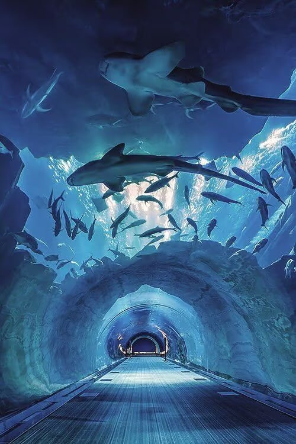
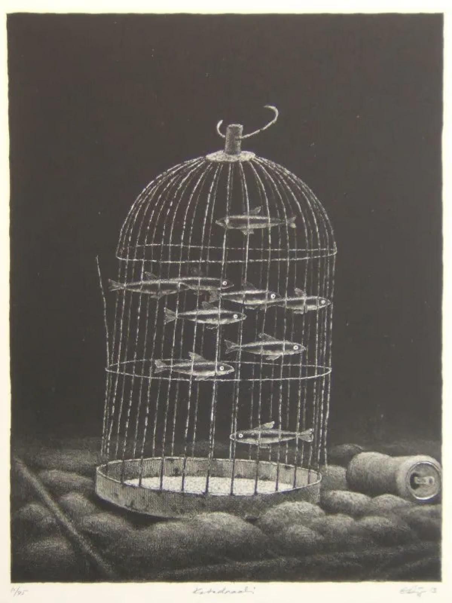

04
视觉设计 / 案例建设中
CAN’T SEA
第十四届全国海洋文化创意设计大赛｜中学组佳作奖
本作品以海洋生物圈养现象为切入点，通过“海洋动物被困于人工环境”的视觉隐喻，讨论海洋生物与自然栖息地之间逐渐割裂的关系。
EXPLORE THE PROCESS · 从概念到落地
01 / Double meaning
“Can't Sea” 的双重含义
Can't Sea / See
这个名字的最初想法是，将自己代入了那些被圈养在水族馆里面的生物，在为自己的家园发声： "I CAN’T SEE THE SEA"。将 "SEA"海洋这个词，借比作"SEE"看见，这个同音不同意的单词，用简化的手法，同时加强了海报传达的“看见”与“海洋”之间的强烈关联



“performing” “applause” “Just for you!!”
当海洋生物的生存，被转化为人类的娱乐。
02 / OVERVIEW
项目概览
Concept & Insight
海洋与牢笼
海洋动物仍然身处“水”中，却已经失去了真正意义上的海洋。